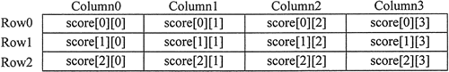
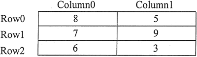

C++二维数组完全攻略
例如，在给平均分数评级的程序中，教师可以将一个学生的所有考试分数记录在一个 double 类型的数组中。如果老师有 30 名学生，那就意味着需要 30 个 double 类型数组来记录整个班级的分数。当然，在这里并不是要定义 30 个单独的数组，而是只要定义一个二维数组就可以了。
到目前为止，教程中所介绍的数组都只是一维数组，因为它们只能保存一组数据。二维数组，也称为 2D 数组，可以容纳多组数据。最好将二维数组看作具有行和列元素的表，如图 1 所示。

图 1 二维数组示意图
这张图显示了 3 行 4 列的测试成绩。请注意，3 行的编号为 0〜2，而 4 列的编号则为 0〜3。数组中一共有 12 个元素。
要定义一个二维数组，需要两个大小声明符。第一个是行数，第二个是列数。下面是一个 3 行 4 列的二维数组定义的例子：
double score [3][4];
请注意，每个数字都包含在它自己的一组方括号中。为了处理二维数组中的信息，每个元素都有两个下标，一个用于行，另一个用于列。在 score 数组中，第 0 行中的元素被引用为：
score[0][0]
score[0][1]
score[0][2]
score[0][3]
score[1][0]
score[1][1]
score[1][2]
score[1][3]
score[2][0]
score[2][1]
score[2][2]
score[2][3]
score[2][1] = 92.25;
以下语句显示第 0 行第 2 列的元素：cout << score [0][2];
循环遍历二维数组中的每个元素的程序通常使用嵌套循环。下面的程序就显示了这样一个例子。// This program uses a two-dimensional array. The // data stored in the array is read in from a file. #include <iostream> #include <fstream> #include <iomanip> using namespace std; int main() { const int NUM_DIVS = 3; // Number of divisions const int NUM_QTRS = 4;// Number of quarters double sales[NUM_DIVS][NUM_QTRS];// 2D array with 3 rows & 4 columns double totalSales = 0; // Accumulates total sales int div, qtr; // Loop counters ifstream inputFile; // Used to read data from a file inputFile.open ("sales2.dat"); if (!inputFile) cout << "Error opening data file.\n"; else { cout << fixed << showpoint << setprecision(2); cout << "Quarterly Sales by Division\n\n"; // Nested loops are used to fill the array with quarterly //sales figures for each division and to display the data for (div = 0; div < NUM_DIVS; div++) { for (qtr = 0; qtr < NUM_QTRS; qtr++) { cout << "Division " << (div + 1) << ", Quarter " << (qtr + 1) << ": $"; inputFile >> sales[div][qtr]; cout << sales[div][qtr] << endl; } cout << endl; // Print blank line } inputFile.close (); //Nested loops are used to add all the elements for (div = 0; div < NUM_DIVS; div++) { for (qtr = 0; qtr < NUM_QTRS; qtr++) totalSales += sales[div][qtr]; } // Display the total cout << "The total sales for the company are: $"; cout << totalSales << endl; } return 0; }程序输出结果：
Quarterly Sales by Division
Division 1, Quarter 1: $31569.45
Division 1, Quarter 2: $29654.23
Division l, Quarter 3: $32982.54
Division 1, Quarter 4: $39651.21
Division 2, Quarter 1: $56321.02
Division 2, Quarter 2: $54128.63
Division 2, Quarter 3: $41235.85
Division 2, Quarter 4: $54652.33
Division 3, Quarter 1: $29654.35
Division 3, Quarter 2: $28963.32
Division 3, Quarter 3: $25353.55
Division 3, Quarter 4: $32615.88
int hours [3][2] = {{8,5}, {7,9}, {6,3}};
上述语句也可以写成以下形式：int hours[3][2] = {{8, 5},{7, 9},{6, 3}};
在以上任何一种情况下，都将以下列方式赋值给 hours：- hours [0][0] 被设置为 8；
- hours [0][1] 被设置为 5；
- hours [1][0] 被设置为 1；
- hours [1][1] 被设置为 9；
- hours [2][0] 被设置为 6；
- hours [2][1] 被设置为 3；
图 2 说明了初始化的结果。

图 2 初始化之后的二维数组
包含每行初始化列表的额外大括号是可选的。以下语句将执行相同的初始化操作：
int hours [3][2] = {{8,5}, {7,9}, {6,3}};
int hours [3][2] = {8, 5, 7, 9， 6, 3};
int table [3][2] = {{1}, {3,4}, {5}};
以上语句可以将 table[0][0] 初始化为 1，将 table[1][0] 初始化为 3，将 table[1][1] 初始化为 4，并将 table[2][0] 初始化为 5。未初始化的元素（在该示例中就是指 table[0][1] 和 table[2][1]）则自动设置为零。关注公众号「站长严长生」，在手机上阅读所有教程，随时随地都能学习。内含一款搜索神器，免费下载全网书籍和视频。

微信扫码关注公众号